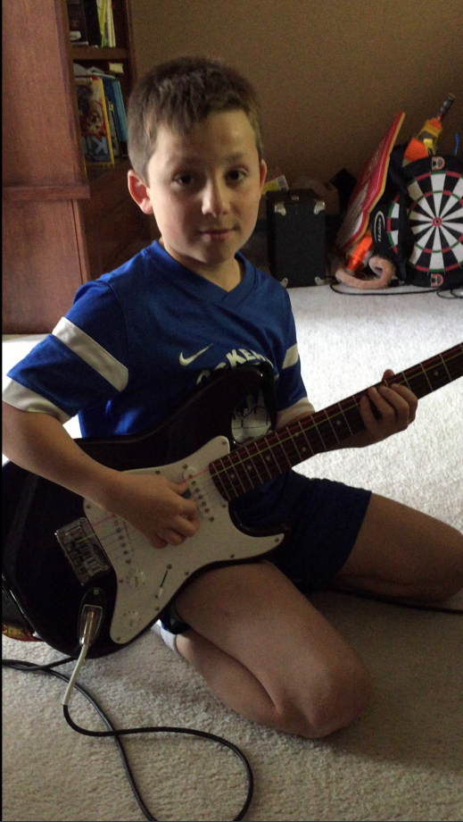
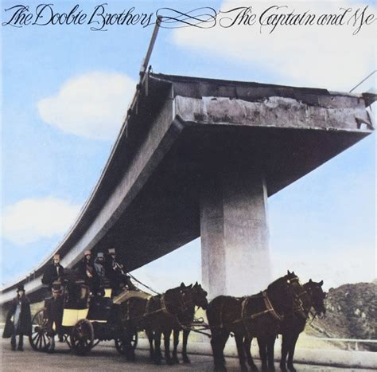
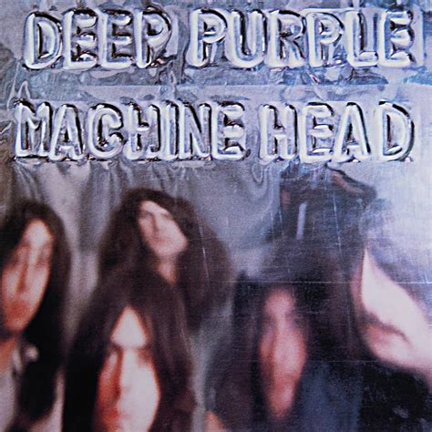
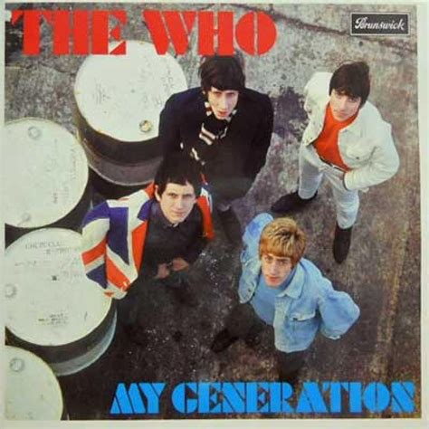
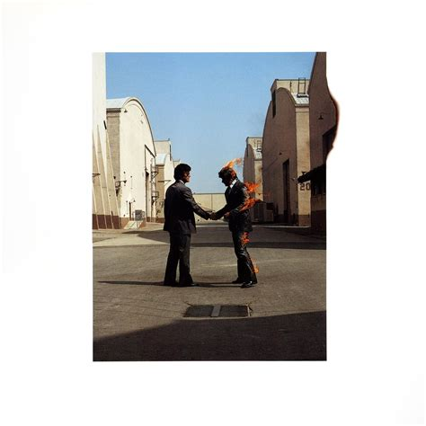
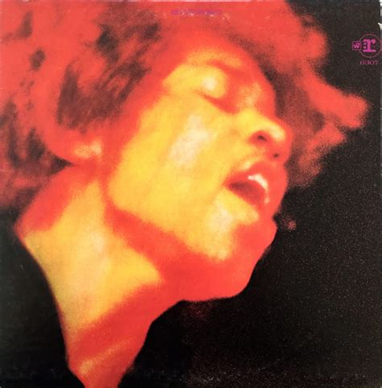

My music journey started when I was 9 years old. I was exposed to guitar by my Uncle Mark. He showed me a new video game that would teach you how to play guitar. The game was called Rocksmith. It is essentially Guitar Hero except you plug a real guitar into your console and it will judge how accurately you play and offer advice on how to improve. I clearly remember playing this game at his house and enjoying the challenge of the game while playing a real guitar. The song that I played that day and the song that got me into playing guitar was "American Idiot" by Green Day. After this day I was sure I wanted to learn to play guitar.
I ordered my first guitar on June 4, 2014 and got it two days later on June 6 along with a copy of Rocksmith 2014. I was completely addicted. The gamification of Rocksmith helped me practice often and I started improving rapidly. I would continue learning to play through Rocksmith and YouTube for roughly the next two years.
The first solo that I learned how to play was "Nothing Else Matters" by Metallica. I performed it at my brother's 8th grade graduation party. This was the first time I really performed in front of a crowd despite the crowd being my brothers friends and their families. My biggest influences at the start of my playing career were Rush, Metallica, and Jimi Hendrix.
I would play this song with jeff and I was so impressed that he had the muscle memory to grab chords so quickly.
I remember going through many songs on Rocksmith and my dad pointed out this song. I thought it was dumb at first but when he got home from work that night, he heard me playing that main riff from downstairs.
This was one of the first songs I really learned well.
This was the song I played in front of my first real crowd of strangers. It is also the only song I have performed in a foreign country.
This song got me into Jimi Hendrix. He would later become one of my greatest influences and favorite artists.
There were many people that were crucial in supporting my musical journey. My immediate family was always supportive and loved seeing and hearing my progress blasting throughout the house. My mom, dad, and brother all supported me in each step of the learning process. One of the most influential person in my music career has been my Uncle Mark. Not only was he the one that introduced me to guitar, but he has also been extremely generous in lending me guitars, amps, and other equipment. I would never be at the point I am at with guitar, or, maybe not even playing guitar without the influence of my Uncle Mark. Another important person was my neighbor and family friend Mr. Jeff P. Since he was a neighbor and close friend of my family, he was around a lot and gave me lots of playing advice. My greatest supporter has been my father. He helped guide me by introducing me to new music and would always be willing to drive me to guitar center or listen to me play guitar.
After being self-taught for nearly two years, I decided to join School Of Rock. I joined a performance and lesson program where the school schedules shows, picks songs, teaches those songs to the students, etc. The theme of the first show was Cheap Trick vs Aerosmith. I had my first lesson on April 23, 2016 where I learned "Auf Wiedersehen" by Trick.
I practiced my songs for a few months and played my first full concert on September 18, 2016 at Reggie's in Chicago. Some songs I played were: (Aerosmith) Walk this Way, Love in an Elevator, and Sweet Emotion, and (Cheap Trick) ELO Kiddies, Hello There, Auf Wiedersehen, and You're All Talk. My next show was a week after that at Basecamp Pub & Eatery in Lisle on the 25th.
I continued participating in the school of rock program up until 2021 when it became too difficult to fit into my schedule. Some other shows that I played and the dates I played them are as follows.
In May of 2019, I auditioned and made the St. Francis Rock Band. I was beyond excited to continue my guitar playing career in a school environment.